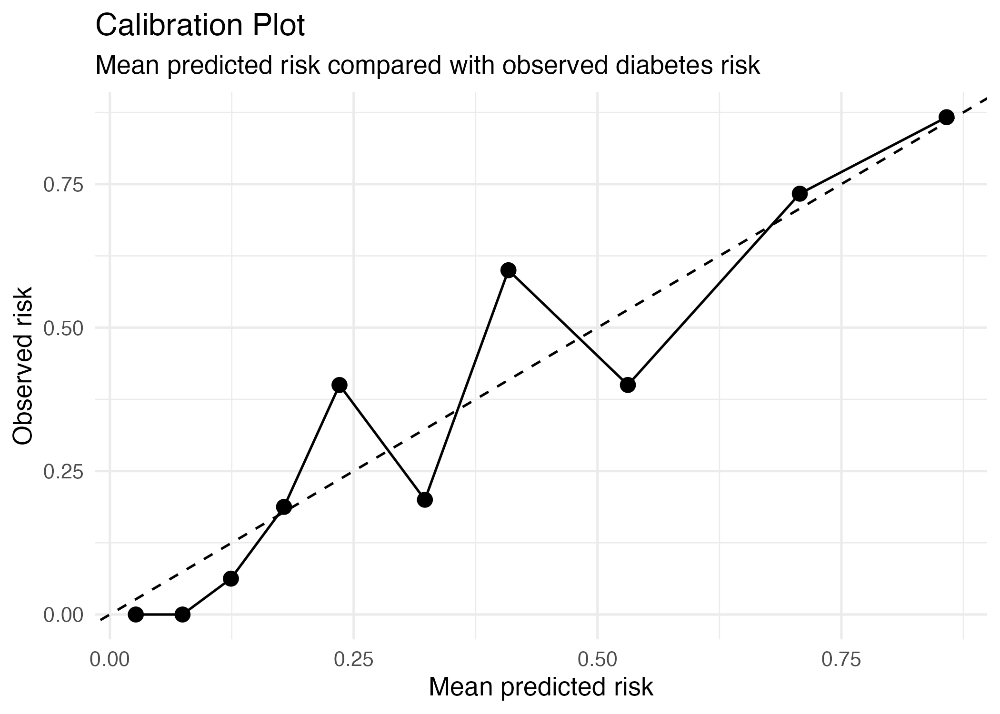

This case study applies supervised learning and logistic regression to a diabetes risk prediction problem.
The aim is not just to fit a model and report performance numbers. The aim is to think like a medical statistician: define the clinical question clearly, understand the outcome, check whether the predictors make sense, evaluate performance properly, and interpret the results in a clinically meaningful way.
In this case study, we focus on:
The clinical question is:
Can we predict whether a patient has diabetes using routinely measured clinical characteristics?
This is a binary classification problem because the outcome has two categories:
Diabetes: yes/no
The model estimates the probability that a patient belongs to the diabetes-positive group based on their clinical measurements.
In a real-world setting, this type of model could potentially support screening, risk stratification, or identifying patients who may need further testing. However, this example is for teaching only and should not be interpreted as a deployable clinical model.
Diabetes risk prediction is a useful first case study because it brings together many issues that appear in real medical machine learning.
A model may look statistically strong, but that does not automatically mean it is clinically useful. We still need to ask:
These questions are more important than simply asking whether the model has high accuracy.
This case study uses the Pima Indians Diabetes dataset, a commonly used teaching dataset for binary classification. The dataset is used to predict whether a patient has diabetes based on diagnostic measurements, and it includes variables such as pregnancies, glucose, blood pressure, skin thickness, insulin, BMI, diabetes pedigree function, age, and diabetes outcome. :contentReference[oaicite:0]{index=0}
The dataset contains clinical measurements including:
This dataset is useful for learning the workflow of clinical prediction modelling. However, it should not be treated as a modern, representative, deployable clinical dataset.
The outcome is:
Diabetes status
The positive class is:
Diabetes = positive
The negative class is:
Diabetes = negative
Defining the positive class clearly is essential because sensitivity, specificity, positive predictive value, and negative predictive value all depend on which group is treated as the event.
The candidate predictors are:
| Predictor | Clinical interpretation |
|---|---|
| Pregnancies | Number of pregnancies |
| Glucose | Plasma glucose concentration |
| Blood pressure | Diastolic blood pressure |
| Triceps | Skinfold thickness |
| Insulin | Serum insulin |
| BMI / mass | Body mass index |
| Pedigree | Diabetes pedigree function |
| Age | Age in years |
Some predictors, such as glucose, BMI, insulin, and age, have clear clinical relevance. Others may require more careful interpretation.
A key principle in medical prediction is that predictors should be available at the time the model is intended to make a prediction.
For this teaching example, we can think of the prediction time point as:
At the time of clinical assessment
This means the model should only use information available at that moment.
For example, glucose, BMI, blood pressure, insulin, and age are available at assessment. Future information should not be used.
This matters because using information measured after the prediction time point would create data leakage.
We use logistic regression as the baseline model.
Logistic regression estimates:
P(diabetes = positive | predictors)
This means the model estimates the probability of diabetes given the patient’s clinical measurements.
Logistic regression is a good first model because it is:
A more complex model should only be preferred if it improves clinically meaningful performance after proper validation.
The case study follows this workflow:
Before fitting a model, we first examine the outcome distribution.
This helps us understand whether the dataset is balanced or imbalanced. If one class is much more common than the other, accuracy can become misleading.
For example, if most patients are diabetes negative, a model could achieve apparently high accuracy by predicting negative for most patients.
The diabetes-negative group is larger than the diabetes-positive group.
In the full dataset used here, there are approximately:
Diabetes negative: 500 patients
Diabetes positive: 268 patients
This means the outcome is moderately imbalanced.
The imbalance is not extreme, but it is enough that we should not rely only on accuracy. A model could look reasonably accurate while still missing many diabetes-positive patients.
The data are split into:
Training set: used to fit the model
Test set: used to evaluate model performance
In this script, the split is:
80% training
20% testing
The test set is important because it gives a better estimate of performance on unseen patients than training performance alone.
In medical prediction, the key question is not:
How well does the model fit the development data?
The key question is:
How well does the model perform for patients not used to train it?
The logistic regression model uses clinical predictors to estimate the probability of diabetes.
Conceptually, the model is:
logit(P(diabetes positive)) =
β0 + β1(pregnancies) + β2(glucose) + β3(blood pressure)
+ β4(triceps) + β5(insulin) + β6(BMI)
+ β7(pedigree) + β8(age)
The model produces predicted probabilities between 0 and 1.
For example:
Predicted probability of diabetes = 0.72
This means that, based on the model, the patient has an estimated 72% probability of being diabetes positive.
The fitted logistic regression model produced the following broad pattern:
| Predictor | Direction in this fitted model | Interpretation |
|---|---|---|
| Pregnancies | Positive | Higher number of pregnancies was associated with higher predicted diabetes risk |
| Glucose | Positive | Higher glucose was associated with higher predicted diabetes risk |
| Blood pressure | Slightly negative | The fitted coefficient was slightly below zero in this model |
| Triceps | Very close to zero | Little independent contribution in this fitted model |
| Insulin | Very close to zero | Little independent contribution in this fitted model |
| BMI / mass | Positive | Higher BMI was associated with higher predicted diabetes risk |
| Pedigree | Positive | Higher pedigree score was associated with higher predicted diabetes risk |
| Age | Slightly positive | Older age was associated with higher predicted diabetes risk |
In the fitted model output, glucose, BMI, pregnancies, and diabetes pedigree function had stronger evidence of association with diabetes status than some of the other predictors.
However, this should not be overinterpreted. This is one train/test split in an educational dataset. The purpose is to understand the modelling workflow, not to make definitive clinical claims.
Predicted probabilities are converted into predicted classes using a threshold.
In this case study, we start with:
Threshold = 0.50
This means:
Predicted probability >= 0.50 → diabetes positive
Predicted probability < 0.50 → diabetes negative
However, a threshold of 0.50 is not automatically clinically appropriate.
For screening, a lower threshold may be preferred because it increases sensitivity and reduces missed cases.
For confirmatory decisions, a higher threshold may be preferred because it increases specificity and reduces false positives.
Using a threshold of 0.50, the confusion matrix was:
| Actual negative | Actual positive | |
|---|---|---|
| Predicted negative | 92 | 22 |
| Predicted positive | 10 | 30 |
This means:
The performance metrics were:
| Metric | Value |
|---|---|
| Accuracy | 0.792 |
| Sensitivity | 0.577 |
| Specificity | 0.902 |
| Positive predictive value | 0.750 |
| Negative predictive value | 0.807 |
At the 0.50 threshold, the model is better at identifying diabetes-negative patients than diabetes-positive patients.
The specificity is high:
Specificity = 0.902
This means the model correctly identifies about 90% of diabetes-negative patients.
But the sensitivity is lower:
Sensitivity = 0.577
This means the model detects only about 58% of diabetes-positive patients at this threshold.
The ROC curve shows the trade-off between sensitivity and specificity across different thresholds.
AUC measures discrimination.
Discrimination asks:
Can the model assign higher predicted risks to patients with diabetes than to patients without diabetes?

The test-set AUC was:
AUC = 0.851
This suggests that the model has useful discrimination in this test set.
In plain language, the model is reasonably good at ranking patients by diabetes risk. Patients with diabetes tend to receive higher predicted risks than patients without diabetes.
However, AUC does not tell us whether predicted probabilities are accurate. It also does not tell us which threshold should be used in practice.
The Brier score measures the average squared difference between predicted probabilities and observed outcomes.
In this case study, the Brier score was:
Brier score = 0.149
Lower Brier scores are better.
The Brier score is useful because it evaluates probability prediction, not only classification.
A model could classify many patients correctly but still give poorly calibrated probabilities. The Brier score helps us think about the quality of the predicted risks.
Calibration assesses whether predicted probabilities agree with observed risks.
For example, if a group of patients has an average predicted risk of 30%, then approximately 30% of that group should be diabetes positive if the model is well calibrated.

Calibration assesses whether predicted probabilities agree with observed risks.
A well-calibrated model should have points close to the diagonal line.
If points are above the diagonal line, the observed risk is higher than the predicted risk. This suggests the model may be underestimating risk in that range.
If points are below the diagonal line, the observed risk is lower than the predicted risk. This suggests the model may be overestimating risk in that range.
In this plot, the overall trend follows the diagonal reasonably, especially at lower and higher risk ranges. However, some middle-risk groups move away from the line.
For example:
| Risk group | Mean predicted risk | Observed risk |
|---|---|---|
| 5 | 0.235 | 0.400 |
| 6 | 0.323 | 0.200 |
| 7 | 0.409 | 0.600 |
| 8 | 0.531 | 0.400 |
This shows that calibration is somewhat unstable in the middle of the risk range.
A threshold converts predicted probabilities into predicted classes.
The script compared several thresholds:
| Threshold | Accuracy | Sensitivity | Specificity |
|---|---|---|---|
| 0.20 | 0.701 | 0.962 | 0.569 |
| 0.30 | 0.714 | 0.788 | 0.676 |
| 0.40 | 0.766 | 0.673 | 0.814 |
| 0.50 | 0.792 | 0.577 | 0.902 |
| 0.60 | 0.786 | 0.481 | 0.941 |
| 0.70 | 0.773 | 0.404 | 0.961 |
This table shows how strongly the choice of threshold changes clinical behaviour.
At threshold 0.20:
Sensitivity = 0.962
Specificity = 0.569
At threshold 0.50:
Sensitivity = 0.577
Specificity = 0.902
At threshold 0.70:
Sensitivity = 0.404
Specificity = 0.961
Lower thresholds detect more diabetes-positive patients, but they also create more false positives.
Higher thresholds reduce false positives, but they miss more diabetes-positive patients.
The model shows useful discrimination, with a test AUC of 0.851.
However, the default 0.50 threshold gives a very specific but less sensitive model:
Sensitivity = 0.577
Specificity = 0.902
This means that at the default threshold, the model is better at ruling out diabetes-negative patients than detecting all diabetes-positive patients.
For a screening use case, this may not be ideal because many true diabetes-positive patients could be missed. A lower threshold may be more suitable if the aim is to capture as many possible diabetes-positive cases as possible.
A balanced interpretation should consider:
The model should not be judged only by accuracy or AUC.
Several problems can affect this analysis.
The model has accuracy of 0.792 at the 0.50 threshold.
This sounds good, but accuracy alone hides the fact that sensitivity is only 0.577.
A model can appear accurate while still missing a clinically important number of diabetes-positive patients.
At threshold 0.50, the model is highly specific but less sensitive.
For screening, this may not be appropriate.
The threshold should be chosen based on clinical consequences, not simply because 0.50 is a common default.
Performance on one dataset does not guarantee performance in another population.
A model developed in one population may perform poorly in another population because of differences in:
The calibration plot uses small groups of patients.
Some points deviate from the diagonal, especially in the middle of the risk range.
This means predicted probabilities should be interpreted cautiously.
A model is only useful if all predictors are available at the time of prediction.
If a predictor is expensive, unavailable, or measured inconsistently, the model may not be practical.
The Pima dataset is useful for teaching, but it may not represent the population where a real diabetes prediction model would be used.
External validation would be essential before considering real-world use.
This is an educational case study.
The model should not be treated as a deployable clinical tool.
Before real-world use, a diabetes risk model would require:
The R code for this case study is:
r/C1_diabetes_risk_prediction_case_study.R
After running the script, the figures should be saved in:
figures/
Expected output files:
figures/diabetes_outcome_distribution.png
figures/diabetes_roc_curve.png
figures/diabetes_calibration_plot.png
This logistic regression model has useful discrimination in the test set, with AUC 0.851. However, the default 0.50 threshold gives sensitivity 0.577 and specificity 0.902, meaning the model is more conservative and misses some diabetes-positive patients. The case study shows why medical prediction models must be interpreted using discrimination, calibration, threshold-specific metrics, and clinical context rather than accuracy alone.